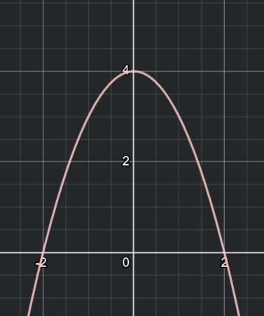

I hope you know what a function is. If you don't, you probably shouldn't be here yet. Here's an example of a simple one:
Let's say this graph depicts the movement of a car. The x-axis is time, and the y-axis is the position of the car. You can obviously tell that the car moves forward while slowing down, eventually slowing down so much that it starts going backwards at a constantly faster pace. The question then becomes: just how fast is the car moving?
The approach you most likely already know is taking an interval and calculating the speed in that interval. This involves getting 4 values: the time at point 1, the time at point 2, the position at point 1, and the position at point 2. In other words:$$speed=v=\frac{x_{2}-x_{1}}{t_{2}-t{1}}=\frac{\Delta x}{\Delta t}$$This is fine for an interval, but what about the speed at just one moment in time? Say I want the exact speed of the car at t=2. This is impossible with our current method, since a 'moment' has a length of 0, and you can't divide by 0...
That's where our friend the limit comes in to play. Let's go back to that interval method. If we want to get the speed at t=2, we can calculate the speed in the interval 2 to 3, or the interval 2 to 2.5, etc.
| Point 1 | Point 2 | v |
|---|---|---|
| 2 | 3 | 5 |
| 2 | 2.5 | 4.5 |
| 2 | 2.25 | 4.25 |
| 2 | 2.1 | 4.1 |
| 2 | 2.01 | 4.01 |
| 2 | 2.001 | 4.001 |
| 2 | 2.0001 | 4.0001 |
Anyone with a functioning brain can tell that the closer we bring the second point in our interval to 2, the closer the speed gets to 4. This calls for a limit!$$\lim_{x \to a} \frac{f(x)-f(a)}{x-a}$$In this limit, our x approaches the value a. This value stands for the x position at which we want to know the speed. On top you have the difference of their function values, which in my example are positions, so this is the same as saying Δx. Meanwhile the bottom of the fraction in the limit is the difference of input values of the function. In our example these are times, so this is the same as Δt. This limit thus represents the instantaneous speed, or a derivative.
You now know how to calculate derivatives using limits - I won't go into solving limits here. Sadly, it's a bit tedious to have to do it with limits all the time. Can't we learn some tricks to make things easier? Yes, we definitely can!
Let's start with x to the power of n, where n is a natural number (1,2,3,..).